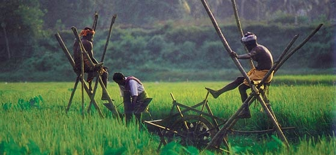
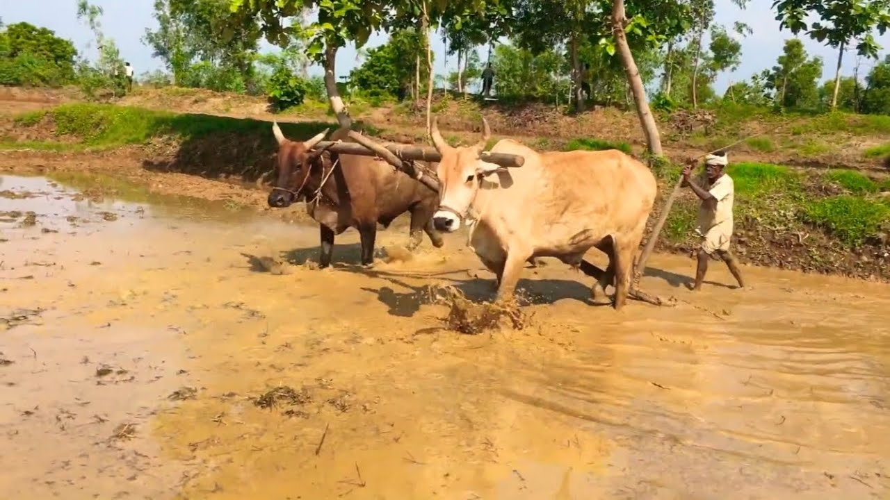
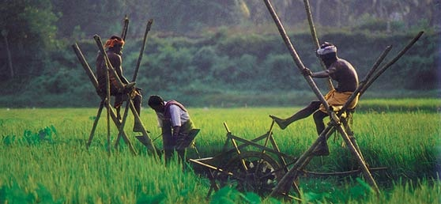
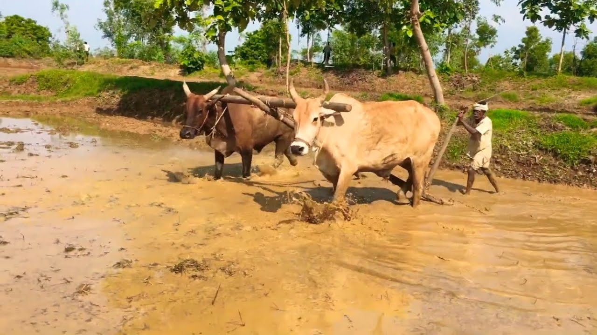
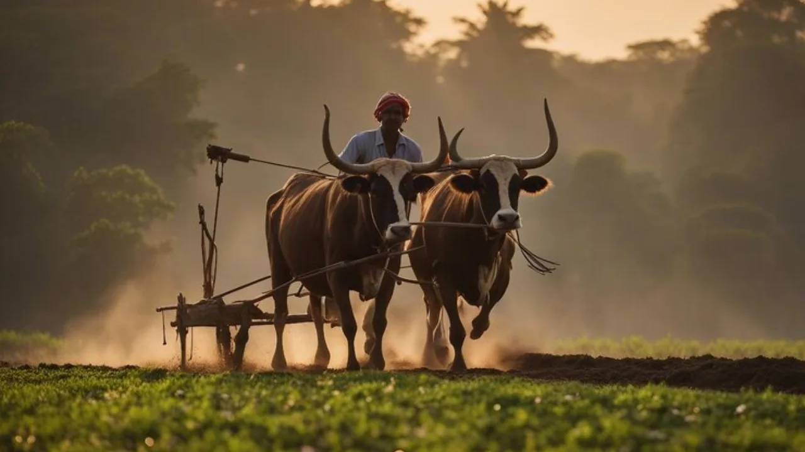
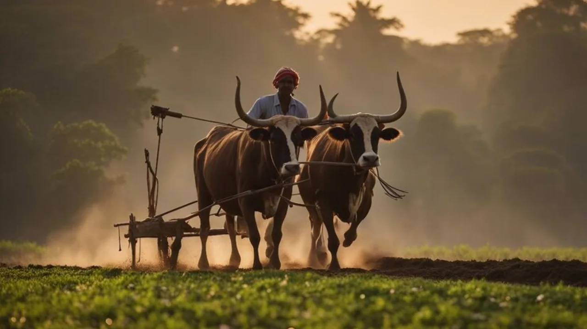

THE EVOLUTION OF FARMING
A journey from traditional methods to modern, sustainable farming shaping the future of agriculture.
Traditional Farming

Organic Farming
Modern farming

Vertical Farming
Hydroponic Farming

Aquaponic Farming
Traditional Farming
Traditional farming in India is more than just a way to grow crops-it’s a time-tested system that harmonises with nature, preserves biodiversity, and sustains millions of rural families. Despite the rise of modern agriculture, traditional methods continue to thrive in various regions, offering sustainable solutions to contemporary challenges. This article delves into the essence of traditional farming in India, exploring its methods, tools, regional practices, and economic significance.
Traditional farming refers to age-old agricultural practices that rely on indigenous knowledge, natural resources, and minimal external inputs. These methods emphasise sustainability, biodiversity, and harmony with the environment. Traditional farming in India dates back thousands of years to the Indus Valley Civilisation. Ancient texts like the Rigveda and Manusmriti document agricultural practices, crop calendars, and irrigation systems. Indian farmers have historically practised sustainable methods long before the modern environmental movement emerged.

 



 

Key Traditional Farming Methods in India
- Crop Rotation
- Alternating crops on the same land to maintain soil fertility.
- Common rotations include legumes followed by cereals.
- Mixed Cropping
- Growing two or more crops simultaneously on the same field.
- Example: Wheat and mustard.
- Agroforestry
- Integrating trees with crops and/or livestock.
- Benefits include improved biodiversity and soil conservation.
- Use of Organic Manure
- Utilising compost, green manure, and animal waste to enrich the soil.
- Manual Weeding and Pest Control
- Employing hand tools and natural pesticides like neem extracts.
Organic Farming
Organic farming in India signifies a shift from traditional agricultural farming practices by avoiding the use of chemical pesticides and synthetic fertilizers.Instead, it relies on natural pest control methods derived from organic sources such as manure, plant residues, and animal waste. This transition towards organic agriculture is a response to the environmental repercussions associated with the widespread use of chemical inputs.It represents a modern organic agriculture system designed not only to rectify the ecological imbalances caused by conventional farming but also to maintain and enhance the overall health of the ecosystem. The organic method of farming process is considered to be a little more difficult than conventional farming.
Organic Farming Methods And Practices
Crop Rotation:
In India, farmers practice crop rotation in organic farming by planting different crops in the same field at different times. This helps maintain soil fertility, reduces the risk of pests and diseases, and ensures sustainable agriculture.
Green Manures:
The second most organic method of farming includes green manures. Farmers use green manures, which are special crops planted to add nutrients to the soil. These crops improve soil fertility naturally, providing essential elements for the healthy growth of subsequent crops.
Pest Management:
In organic farming, pest management involves using beneficial insects or natural methods to control harmful pests. This eliminates the need for chemical pesticides, promoting a healthier environment.
Weed Management:
Weed management is one of the crucial techniques of organic farming for maintaining a healthy crop. Farmers in India adopt practices to keep unwanted plants in check, ensuring that crops receive sufficient nutrients and water without competition. Weed management is one of the important organic method of farming.
Crop Diversity:
A contemporary agricultural approach known as 'Polyculture' has gained popularity recently. This polyculture method involves cultivating a diverse range of crops concurrently, addressing the growing global demand for food items.
Vermiculture:
Vermiculture is an important part of the organic method of farming involves using worms to create natural fertilizer. In India, farmers utilize worms to break down organic matter, producing nutrient-rich soil that enhances the overall health of the crops.
| Type / Approach | Inputs Used | Scientific Basis | Certification Possible? | Suitable For | Example Regions / Uses |
|---|---|---|---|---|---|
| Pure Organic Farming | Only organic inputs | Basic organic principles | Yes | Small certified farms, export-focused units | Sikkim, Uttarakhand |
| Integrated Organic Farming | Organic + on-farm resources | Low-input sustainable system | Yes | Small & marginal farmers | Punjab, UP, Bihar |
| Natural Farming (SPNF) | Jeevamrut, Beejamrut, cow dung-based inputs | Subhash Palekar’s Zero Budget model | Yes (as part of organic) | Low-budget, desi cow-based farms | Andhra Pradesh, Maharashtra |
| Biodynamic Farming | BD 500–BD 508, cosmic calendar, compost | Rudolf Steiner’s spiritual science | Yes | Spiritual & export-focused farms | Maharashtra (grapes), Himachal (apples) |
| Permaculture | Organic + eco-design principles | Bill Mollison’s ecological design concept | No standard, but practices align | Kitchen gardens, hobby farms, urban farms | Auroville (TN), eco-villages |
| Vedic / Rishi Krishi | Panchagavya, Agnihotra, lunar timings | Vedic literature, desi traditions | No | Spiritual/Traditional farming believers | Gujarat, MP, Tamil Nadu |
| Agroecology-Based Farming | Indigenous seeds, organic inputs | FAO-recognized, ecology-based system | Yes (under organic umbrella) | Farmer collectives, community farms | Odisha, Jharkhand, tribal regions |
| Urban Organic Farming | Compost, kitchen waste, neem-based sprays | Organic principles, DIY-friendly | No (usually personal scale) | Urban gardeners, schools, home growers | Bengaluru, Pune, Delhi rooftops |
Modern Farming
Modern farming is characterized by its reliance on advanced technology and innovative practices to improve crop yields and reduce environmental impact. This approach to agriculture has transformed the way food is produced, making it more efficient and sustainable.Modern agriculture is distinguished by several key characteristics, including the use of precision farming techniques, advanced irrigation systems, and the integration of technology such as drones and automated machinery. These innovations enable farmers to make data-driven decisions, optimize resource allocation, and minimize waste.

Modern farming is characterized by its reliance on advanced technology and innovative practices to improve crop yields and reduce environmental impact. This approach to agriculture has transformed the way food is produced, making it more efficient and sustainable. Technology plays a pivotal role in modern farming, driving innovation and efficiency. The use of modern farming technology, such as IoT devices, drones, and AI-powered analytics, has revolutionized agricultural practices.
Drones, for instance, are used for crop monitoring, soil analysis, and planting, while AI and machine learning algorithms help in predicting crop yields, detecting pests, and optimizing farming schedules. These technological advancements are transforming the agricultural landscape, making farming more productive and sustainable. Drones equipped with cameras and sensors are being used for crop monitoring, spraying, and other applications.
| Crop | Modern Technique | Benefit |
|---|---|---|
| Rice | Conservation Agriculture | Improved soil health and reduced erosion |
| Wheat | Conservation Agriculture | Improved soil health and reduced erosion |
| Corn/Soybean | Precision Planting and Seeding | Optimized planting density and reduced waste |
Modern rice farming has seen significant advancements with the introduction of techniques such as precision agriculture and alternate wetting and drying (AWD). Precision agriculture involves the use of GPS and IoT technologies to optimize crop management, while AWD helps in reducing water consumption and methane emissions.
Vertical Farming
What is Vertical Farming?
Vertical farming is exactly what it sounds like: farming on vertical surfaces rather than traditional, horizontal agriculture. By using vertically stacked layers, farmers can produce much more food on the same amount of land (or even less). Often these layers are integrated into buildings such as skyscrapers, housed in warehouses or shipping containers, greenhouses (like ours), or placed in spaces that would otherwise be unfit for farming. Yet vertical farming is much more than just stacking plants and hoping for the best. The practice requires artificial temperature, light, water, and humidity control. If a delicate balance is not maintained, it’s possible to lose an entire crop the way a traditional farm might in the event of a drought or flood.

Vertical farms are being used beyond food. In fact, they’re being used to aid human health. Caliber Biotherapeutics in Bryan, Texas, is home to the world’s largest plant-made pharmaceutical facility. This 18-story, 150,000-square-foot facility contains a staggering 2.2 million tobacco-like plants stacked 50 feet high, that will be used for making new drugs and vaccines. Because the indoor farm is so carefully monitored and tightly controlled by technicians, these expensive plants are shielded from possible diseases and contamination from the outside world.
Hydroponic Farming
Hydroponics is a technique used for growing plants in water without soil using mineral fertilizer solutions. It is a subset of hydroculture. “Hydroponic” is a Greek word meaning hydro is “water,” and ponic is “work”.The plants instead use a nutrient-rich solution (water) for root and shoot growth.Presently, farming is not limited to villages only, and it is proceeding to urban and semi-urban areas where there needs to be more proper land. Here Hydroponic farming becomes a very useful technology to produce desired crops. In conventional farming, soil acts as a reservoir of nutrients, whereas in hydroponic farming water-based solution provides all the necessary nutrients to the growing crops.

Dr. W. F. Gericke introduced the technology. He publicly displayed bountiful tomato plants cultivated by this method in 1937 in the United States. This technology further spread across, and fresh vegetables for troops were supplied in Wake Island. Presently many lands are losing their nutrient values due to the conventional use of pesticides and fertilizers. Presently, farming is not limited to villages only, and it is proceeding to urban and semi-urban areas where there needs to be more proper land.A hydroponic system comprises various tools and equipment that are packed together.
Types of Hydroponic Systems:
Wick System:

This is the most straightforward hydroponic system that does not require any mechanism for the transportation of nutrients. The wick system operates similarly to an oil lamp. The roots absorb nutrients with the help of cotton or nylon wicks going from the tank to the substrate. A substrate is a growing media that provide anchoring and aeration to the plant roots. A substrate material can consist of coconut fiber, perlite layer, vermiculite, clay pebbles, lava rocks, etc. The growing media is accessed in the wick system by inserting one end of the wick through the bottom of the tray or container. The nutrient solution is reached by hanging the other end into a reservoir or container. Up the wick, the liquid will flow until the medium around the roots is wet. The wick will once more absorb liquid after the medium dries up. Wick systems are best for little plants and are frequently used in aesthetic gardening.
Deep Water Culture (DWC) System:

The DWC system is the easiest and most effective type of hydroponic system. In this system, the plant’s roots are constantly submerged in nutrient-dense water to obtain enough oxygen. The plants are usually fixed on a platform that is often made of foam plastic. This platform drifts in the tank filled with nutrient solution. A special air pump helps with the aeration of the nutrient solution. Since the plant’s roots are submerged in water 24 hours a day, it is of utmost importance to change the solution regularly to avoid the accumulation of molds and fungi. The DWC system is mainly used to cultivate small and fast-growing plants, for example, salad and lettuce.
The Ebb and Flow System:

This system is also known as the flood and drain method. The system is widely accepted and requires an intermediate level of skills to maintain. The plants in this arrangement are kept in a tray that is periodically supplied with water rich in nutrients. A submerged pump is installed below the tray, which floods the tray with nutrient solution. Once the water reaches a set level, an overflow pipe drains back the nutrient solution into the reservoir. Oxygen-poor air is pushed out of the root system during the entire flood cycle. When the nutrient solution is drained back, oxygen-rich air is pulled into the growing medium. As a result, the roots receive enough oxygen and can take in more nutrients. Gravity is used by the flood and drain system to channel water back into the reservoir for continuous reuse. The same water can be used for about a week at a time. When it is time to change the water, fresh nutrients are needed to add up.
Nutrient Film Technique (NFT):

In this hydroponic technique, plants stand in a shallow stream of water containing all the dissolved nutrients necessary for plant growth. As a result, growing tanks housing the plants’ roots are continuously flooded with water. The nutrients the plants require are present in the reservoir. The plants absorb the nutrients through the root tips when these come in contact with a nutrient-rich solution. The nutrient-rich solution flows with the force of gravity. The solution’s flow also provides oxygen, which is beneficial for the health of the plant’s roots. Normally, the grow trays should be tilted to allow for good water flow.The plants are held up by a support collar or a growing basket and no growing medium is used other than air. Hence, the plant can get more oxygen which accelerates its growth. The NFT technique is best suited for vertical farming, ideal for lightweight , fast-growing plants that do not require much support.
Drip System:

The drip type of hydroponics system works based on the principle of conventional field micro-irrigation technique. Drip system hydroponics uses a system of tubes powered by a water pump to deliver nutrient-infused water to each plant based on each one’s needs. The pump is usually connected to the timer that automates the irrigation schedule. The drip system transports nutrient-dense water directly to the base of the plants. Therefore, it helps to keep the plant roots moist by reducing water evaporation.
Aquaponics
Aquaponics is a name of farming system, where we can produce two different types of crops by minimizing the land, water & manpower also. In general, the implication of effective & scalable RAS aquaculture with hydroponics is the main theme of any type of aquaponic system. Nutrient recycling through constructive microbes regulates the whole system functionally. In some part of India, different types of aquaponics system have been introduced experimentally. Usually, whole world wide three sorts of aquaponics technology are used for their good yield.